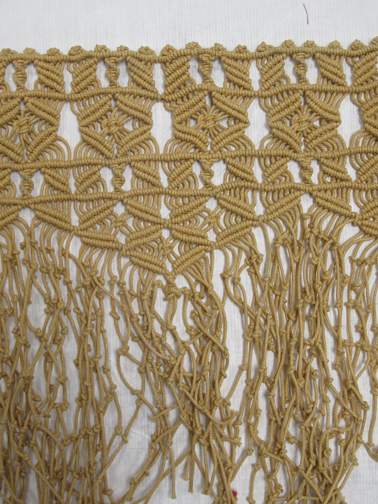
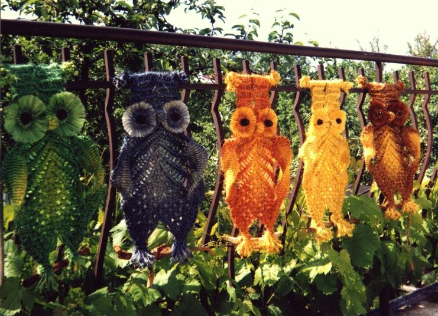

دیزاینسیستم «گِرِه / بوتیک خاکی»
همهی مقادیر این صفحه از متغیرهای assets/styles.css خوانده میشوند؛ هیچ مقدار تکراری در صفحات وبسایت hard-code نشده. لایهی @layer od-layout (OD-LAYOUT-PRIMITIVES v1) ساختار را میسازد و لایهی توکنها ظاهر را.
۱ — پالت رنگ (روشن / تیره)
کنستراست متن بدنه در هر دو حالت بهطور مستقل سنجیده شده: ≥ 4.5:1 برای متن، ≥ 3:1 برای متن درشت و آیکون. رنگ «رسی» فقط برای تعامل است، «سِیج» رنگ ساختاری دوم.
حالت تیره با [data-inverse] روی هر بخش (مثل بخشهای تاریک صفحهٔ خانه) اعمال میشود — همان توکنها، مقادیر وارونه.
۲ — تایپوگرافی
نمایش: Lalezar — متن: Vazirmatn ۳۰۰ تا ۷۰۰؛ هر دو لوکال (woff2). مقیاس: ۱۶، ۱۸، ۲۰، ۲۴، ۳۲، ۴۴، ۶۰، ۹۶، ۱۲۸ پیکسل. حداقل متن بدنه ۱۶px، ارتفاع خط ۱.۷.
۳ — فاصله و گوشه
واحد ۸ پیکسل؛ مقیاس ۴ تا ۱۶۰. tier استاندارد ۱۶–۶۴. شعاعها: ۰ / ۲ / ۶ / ۱۲ / ۲۴ / ۹۹۹.
۴ — سایه و خط
سایهها فقط با رنگ گرمِ مرکب (rgba ۲۷،۲۳،۲۰) و سقف آلفا ۰.۱۸؛ خطچین برای برچسب «نمونه».
۵ — مؤلفهها
- سبد
- مشخصات
- تأیید
| جمع کالاها (۳ عدد) | ۴٬۱۸۰٬۰۰۰ تومان |
| ارسال | ۹۰٬۰۰۰ تومان |
| قابل پرداخت | ۴٬۲۷۰٬۰۰۰ تومان |
۶ — حالات تعامل
default · hover · focus · selected · loading · empty · success · failure · disabled · pressed — روی هر مؤلفه پیاده است؛ focus با کیبورد (Tab) دیده میشود.
چند مورد نیاز به اصلاح دارد:
۷ — حرکت
میکرو ۱۵۰–۳۰۰ms · ماکرو ۴۰۰ms · صفحه ۴۲۰ms · استگر ۴۰ms · ورود cubic-bezier(.16,1,.3,1) · خروج cubic-bezier(.4,0,1,1) · فقط transform/opacity. با prefers-reduced-motion همهچیز «آشکارِ فوری» میشود و هنرِ متحرک ثابت.
۸ — خانوادهٔ آیکون
تکخانواده: گرید ۲۴، استروک ۱.۵ پیکسل، currentColor، سرگردِ round — بدون ایموجی کارکردی.
۹ — هندسهٔ رسانه
نسبت هر کانتینر از اندازهٔ ذاتی فایل سنجیدهشده میآید (assets/img/measured.json)؛ تصویرِ محتوا کرپ نمیشود، cover فقط برای فایلهای تزئینی.



۱۰ — منابع تصویر و پروانهها
همهی عکسها واقعی، از ویکیمدیا کامنز، لوکالشده زیر assets/img/ با ذکر هنرمند و پروانه. چند محصولِ همخانواده تصویر مشترک دارند (ریسک اعلامشده در پلن) — بهجای تولید عکس جعلی.
فونتها: Vazirmatn و Lalezar — هر دو OFL، لوکال زیر assets/fonts/ (۱۸ فایل woff2).